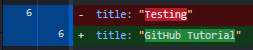

GitHub Tutorial
Introduction
This will serve as a short tutorial that covers the benefits of version control and how you can quickly setup and use a service such as GitHub to maintain, share, and collaborate on various code-based projects.
What is version control and why should I use it?
Scripts of coding language (e.g., R, Python) are often living documents that grow and change alongside the skills and needs of the developer, As a result, code if often re-written to test a new idea, produce a new analysis, or modify an existing figure.
However, we may want to keep that original code, especially if we prescribe to the ’if it ain’t broke, don’t fix it’ mentality. This often leads to scripts full of extraneous or commented code, multiple versions of a script (e.g., v1, v1.2, v2.6.7), and an all around disorganized product that may be difficult to reproduce. Reproducibility, and more recently transparency of our code, are cornerstones of research and publishing.
A service such as Git can help us achieve both of these things. Nearly all coding scripts are simple ASCII text files. They do not contain formatting complexities such as margins, font type, size, figures, etc. Therefore, services like Git are able to recognize nearly any in a script, allowing the developer to catalog and store those changes without the necessity of maintaining out-dated code or file revisions. In essence, we can create a repository of changes that allow us to visualize and accept/reject those changes, and possibly restore previous versions of our code if necessary.
This can be incredibly powerful for a number of reasons:
If we break the code for an analysis or a figure, we can simply go back to a previous working version of our code - thus, version control
Cloud based services such as Box, OneDrive, or GoogleDrive allow you to sync changes across devices, but the simplicity of ASCII text files do not typically allow us to track where changes were made or how (e.g., MS Word’s Track Changes). Git can identify those changes, and some GUI’s will indicate where those changes exist in the script.

R and Python are among the most widely used open-source coding languages. Large-scale collaborative studies often bring people together, working together on code-based analyses, visualizations, etc. Git repositories allow for a centralized location for all of this to happen among collaborators while simultaneously tracking changes made by any one individual.
We can create branches of our code to test out new approaches, analyses, etc., and then seamlessly fold those changes back into our mainstream code with little-to-no downtime. This is particularly relevant for websites or services that continually provide product(s), but where developers may want to make modifications to improve existing or add new features.
So what is GitHub, and how is it different from Git?
GitHub is one of many UIs that improve how we interact with Git. Git, similar to R is typically operated through text commands in the console (e.g., Command Prompt, PowerShell). GitHub is simply a more intuitive, graphical interface for the Git service(s). To make things even more complicated, there are a number of third-party programs that interact with GitHub.
However, the key point is that much like RStudio needs R (or Python) to operate, GitHub requires Git to do what we want.